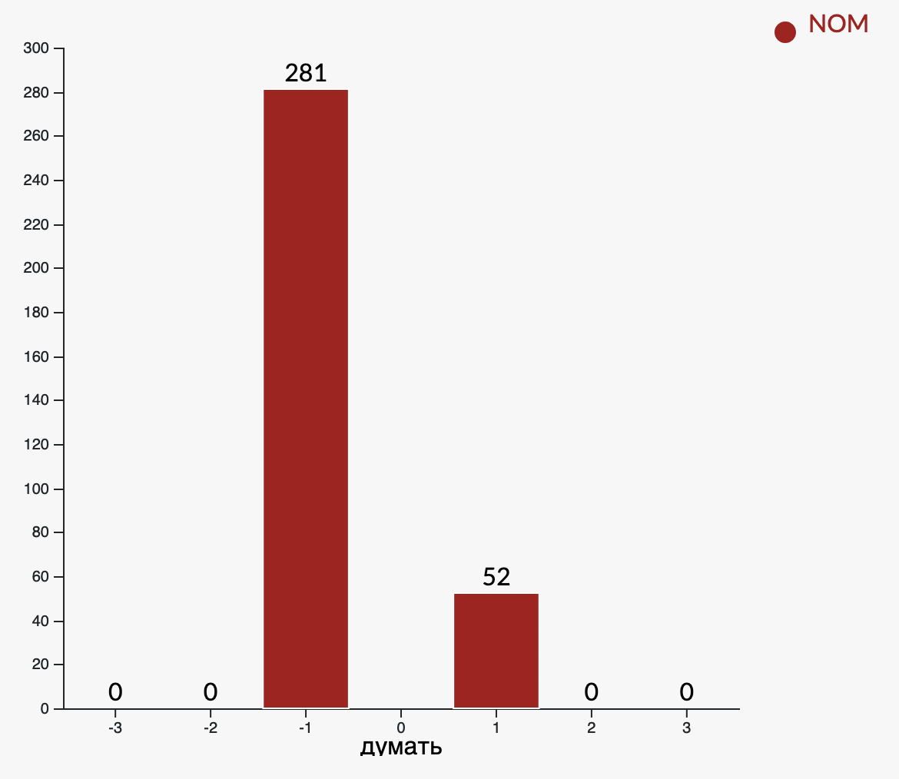

Verb Histograms is a tool in the Visualizing Russian suite that visualizes the relative frequencies of different constructions associated with different verbs. The idea of constructions comes from Construction Grammar, which posits that constructions, or learned pairings of linguistic patterns with meanings, are the fundamental building blocks of human language. Prepositions play a big role in Russian verb constructions. For example the verb "to play", or igrat' (играть), is often used with two prepositions: na (на) and v' (в), which both mean something similar to "in" or "on." However, the choice of preposition one uses with igrat' essentially determines its meaning. Na indicates a playing a musical instrument, while v' indicates playing a sport. For example: You can say igrat' na (piano) and igrat' v' (soccer), but you can't say igrat' na (soccer) or igrat' v (piano).
The Verb Histogram Tool shows which prepositions, cases, and expressions are used most frequently with certain verbs. Clicking on the bar graph itself shows the real examples from the corpus which comprise the statistics shown in the graph.
Of course, Russian is a complex language, and many, many, different constructions can be found surrounding the same verb, but it is helpful to know which constructions are most common to a certain verb, or what words frequently occur with a certain verb.
You can try the live tool on the Visualizing Russian website
Demo of the Verb Histogram Tool on the verb "to think", or dumat' (думать). The top part of the tool is a dashboard showing the most common constructions across all instances of the verb found in the corpus. For "to think," the most common collection of constructions were "думать + [ о/об + LOC ]" (to think about something) and "думать + [ , что ]" (to think that...). A list of frequently co-occurring words is also shown, helping users understand the phrasal context of the verb.
Below: Graph of the different constructions of "to think." The common constructions pointed out in the dash are reinforced in the graph, along with a multitude of other possible constructions. The horizontal axis refers to the place in the sentence where the particular construction begins (3 words before the verb, 2 words before the verb, etc.):
Below: Users can hover over the legend to look at the breakdown for a particular construction. Clicking on "NOM" shows that the nominative case shows up in the -1 and +1 positions around the verb, but about 4 times more frequently before (in this corpus):
Below: It is also possible to view the examples comprising the statistics shown on the graph. For example, here we see sentences from the corpus where ", что" (that) that occur in the +1 position of the verb "to think".